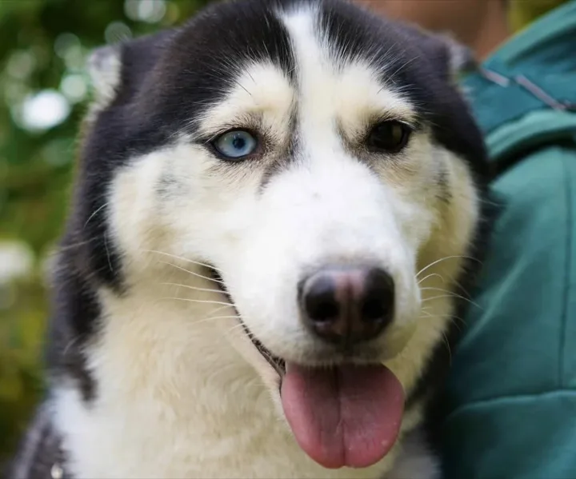

<title>Athena 形象视频动作规格</title>
<meta name="claude:viewport-fit-sides" content="cover">
<style>
/* Layout: single centred spec column (max 1120px); hero pipeline strip, then a card grid, a state ladder + to-scale timeline, then prompt reference panels. */
:root {
  --bg: #f7f7f5;
  --surface: #fefefd;
  --surface-2: #f0f0ed;
  --sunken: #ecece8;
  --line: rgba(20, 20, 22, 0.08);
  --line-strong: rgba(20, 20, 22, 0.15);
  --fg: #19191b;
  --fg-2: #56565c;
  --fg-3: #8a8a90;
  --accent: #3d6d8c;
  --accent-soft: rgba(61, 109, 140, 0.10);
  --loop: #3b7656;
  --loop-soft: rgba(59, 118, 86, 0.11);
  --once: #8b5d2a;
  --once-soft: rgba(139, 93, 42, 0.11);
  --warn: #a2482f;
  --warn-soft: rgba(162, 72, 47, 0.10);
  --code: #f3f3f0;
  --slot-1: rgba(61, 109, 140, 0.14);
  --slot-2: rgba(59, 118, 86, 0.15);
  --slot-3: rgba(139, 93, 42, 0.15);
  --shadow: 0 1px 2px rgba(0,0,0,.04), 0 6px 24px rgba(0,0,0,.05);
  --scrim: rgba(18, 18, 20, 0.55);
  --font: -apple-system, BlinkMacSystemFont, "SF Pro Text", "PingFang SC", "Hiragino Sans GB", "Microsoft YaHei", "Segoe UI", "Noto Sans SC", sans-serif;
  --mono: ui-monospace, "SF Mono", SFMono-Regular, Menlo, Consolas, monospace;
  --r-s: 12px;
  --r-m: 14px;
  --r-l: 18px;
}
@media (prefers-color-scheme: dark) {
  :root:not([data-theme="light"]) {
    --bg: #141415; --surface: #1c1c1f; --surface-2: #232327; --sunken: #18181a;
    --line: rgba(255,255,255,0.07); --line-strong: rgba(255,255,255,0.14);
    --fg: #ececee; --fg-2: #a6a6ad; --fg-3: #74747b;
    --accent: #8fb9d6; --accent-soft: rgba(143,185,214,0.12);
    --loop: #7fc29d; --loop-soft: rgba(127,194,157,0.12);
    --once: #dcaa70; --once-soft: rgba(220,170,112,0.12);
    --warn: #e28c72; --warn-soft: rgba(226,140,114,0.12);
    --code: #18181a;
    --slot-1: rgba(143,185,214,0.18); --slot-2: rgba(127,194,157,0.18); --slot-3: rgba(220,170,112,0.18);
    --shadow: 0 1px 2px rgba(0,0,0,.3), 0 8px 28px rgba(0,0,0,.25);
    --scrim: rgba(0,0,0,0.66);
    color-scheme: dark;
  }
}
:root[data-theme="dark"] {
  --bg: #141415; --surface: #1c1c1f; --surface-2: #232327; --sunken: #18181a;
  --line: rgba(255,255,255,0.07); --line-strong: rgba(255,255,255,0.14);
  --fg: #ececee; --fg-2: #a6a6ad; --fg-3: #74747b;
  --accent: #8fb9d6; --accent-soft: rgba(143,185,214,0.12);
  --loop: #7fc29d; --loop-soft: rgba(127,194,157,0.12);
  --once: #dcaa70; --once-soft: rgba(220,170,112,0.12);
  --warn: #e28c72; --warn-soft: rgba(226,140,114,0.12);
  --code: #18181a;
  --slot-1: rgba(143,185,214,0.18); --slot-2: rgba(127,194,157,0.18); --slot-3: rgba(220,170,112,0.18);
  --shadow: 0 1px 2px rgba(0,0,0,.3), 0 8px 28px rgba(0,0,0,.25);
  --scrim: rgba(0,0,0,0.66);
  color-scheme: dark;
}

* { box-sizing: border-box; }
body {
  background: var(--bg); color: var(--fg);
  font-family: var(--font); font-size: 14px; line-height: 1.6;
  -webkit-font-smoothing: antialiased;
}
body::before { content: ""; position: fixed; inset: 0 0 auto; height: env(safe-area-inset-top, 0px); z-index: 10; background: var(--bg); }
.wrap {
  max-width: 1120px; margin: 0 auto;
  padding-left: max(16px, env(safe-area-inset-left, 0px));
  padding-right: max(16px, env(safe-area-inset-right, 0px));
}
h1, h2, h3, h4 { margin: 0; text-wrap: balance; letter-spacing: -0.01em; }
h1 { font-size: 26px; line-height: 1.25; font-weight: 650; }
h2 { font-size: 21px; font-weight: 650; }
h3 { font-size: 15px; font-weight: 600; }
p { margin: 0; }
code, .mono { font-family: var(--mono); font-size: 0.92em; }
a { color: var(--accent); }
:focus-visible { outline: 2px solid var(--accent); outline-offset: 2px; }

/* nav */
.nav { position: sticky; top: env(safe-area-inset-top, 0px); z-index: 5; background: color-mix(in srgb, var(--bg) 88%, transparent); backdrop-filter: blur(10px); -webkit-backdrop-filter: blur(10px); border-bottom: 1px solid var(--line); }
.nav .wrap { display: flex; align-items: center; gap: 4px; padding-block: 10px; overflow-x: auto; scrollbar-width: none; }
.nav .brand { font-weight: 600; margin-right: 10px; white-space: nowrap; font-size: 13px; }
.nav a { color: var(--fg-2); text-decoration: none; padding: 5px 11px; border-radius: 999px; font-size: 13px; white-space: nowrap; }
.nav a:hover { background: var(--surface-2); color: var(--fg); }

/* header + hero */
header.top { padding-block: 34px 12px; display: grid; gap: 10px; }
.eyebrow { font-size: 12px; color: var(--fg-3); letter-spacing: 0.06em; }
.lede { color: var(--fg-2); max-width: 68ch; font-size: 14.5px; }
.hero { margin-top: 18px; background: var(--surface); border: 1px solid var(--line); border-radius: var(--r-l); padding: 18px; display: grid; grid-template-columns: minmax(0, 1fr) auto minmax(0, 2.15fr) auto minmax(0, 1.15fr); gap: 14px; align-items: center; }
.hero figure { margin: 0; display: grid; gap: 6px; min-width: 0; }
.hero figcaption { font-size: 12px; color: var(--fg-2); display: flex; gap: 6px; align-items: baseline; flex-wrap: wrap; }
.hero figcaption b { color: var(--fg); font-weight: 600; }
.hero img, .hero video { width: 100%; max-width: 100%; height: auto; aspect-ratio: 1; object-fit: cover; border-radius: var(--r-s); display: block; background: var(--surface-2); }
.hero .photo img { aspect-ratio: 1; }
.arrow { color: var(--fg-3); display: grid; place-items: center; font-size: 12px; gap: 2px; text-align: center; }
.arrow svg { width: 26px; height: 26px; }
.styles4 { display: grid; grid-template-columns: repeat(4, minmax(0, 1fr)); gap: 8px; }
.styles4 figure { position: relative; }
.styles4 figure.picked img { outline: 2px solid var(--accent); outline-offset: 2px; }
.pick-tag { position: absolute; top: 6px; left: 6px; background: var(--accent); color: var(--surface); font-size: 11px; padding: 1px 7px; border-radius: 999px; font-weight: 600; }
.chosen video { outline: 1px solid var(--line); }
.pipeline { margin-top: 12px; display: flex; flex-wrap: wrap; gap: 6px; align-items: center; font-size: 12.5px; color: var(--fg-2); }
.pipeline span.step { background: var(--surface); border: 1px solid var(--line); border-radius: 999px; padding: 3px 10px; }
.pipeline span.sep { color: var(--fg-3); }

section.block { padding-block: 44px 8px; display: grid; gap: 18px; }
.sec-head { display: grid; gap: 6px; }
.sec-head .num { font-family: var(--mono); font-size: 12px; color: var(--fg-3); }
.sec-head p { color: var(--fg-2); max-width: 72ch; }
.group-head { display: flex; align-items: baseline; gap: 10px; flex-wrap: wrap; margin-top: 10px; }
.group-head .count { font-size: 12px; color: var(--fg-3); }
.group-head p { flex-basis: 100%; color: var(--fg-2); font-size: 13px; }

/* cards */
.grid { display: grid; grid-template-columns: repeat(auto-fill, minmax(232px, 1fr)); gap: 12px; }
.card { background: var(--surface); border: 1px solid var(--line); border-radius: var(--r-m); overflow: hidden; display: flex; flex-direction: column; text-align: left; padding: 0; color: inherit; font: inherit; cursor: pointer; transition: border-color .15s, box-shadow .15s, transform .15s; min-width: 0; }
.card:hover { border-color: var(--line-strong); box-shadow: var(--shadow); }
.card .media { position: relative; aspect-ratio: 1; background: var(--surface-2); }
.card video { width: 100%; height: 100%; object-fit: cover; display: block; }
.card .media .corner { position: absolute; right: 8px; bottom: 8px; display: flex; gap: 4px; }
.card .body { padding: 12px 13px 13px; display: grid; gap: 8px; min-width: 0; }
.card .title { display: flex; align-items: baseline; justify-content: space-between; gap: 8px; }
.card .title h3 { font-size: 15px; }
.card .title code { color: var(--fg-3); font-size: 11.5px; white-space: nowrap; }
.card .trig { color: var(--fg-2); font-size: 13px; line-height: 1.55; }
.badges { display: flex; flex-wrap: wrap; gap: 5px; }
.badge { font-size: 11.5px; line-height: 1; padding: 4px 7px; border-radius: 6px; background: var(--surface-2); color: var(--fg-2); display: inline-flex; align-items: center; gap: 5px; white-space: nowrap; font-variant-numeric: tabular-nums; }
.badge.loop { background: var(--loop-soft); color: var(--loop); }
.badge.once { background: var(--once-soft); color: var(--once); }
.badge.prio { background: var(--accent-soft); color: var(--accent); font-family: var(--mono); }
.badge.warn { background: var(--warn-soft); color: var(--warn); }
.badge .fthumb { width: 14px; height: 14px; border-radius: 3px; object-fit: cover; }
.media .badge { background: color-mix(in srgb, var(--surface) 88%, transparent); backdrop-filter: blur(6px); }

/* machine */
.panel { background: var(--surface); border: 1px solid var(--line); border-radius: var(--r-l); padding: 18px; display: grid; gap: 14px; min-width: 0; }
.panel > h3 { display: flex; gap: 8px; align-items: baseline; flex-wrap: wrap; }
.panel > h3 small { font-weight: 400; color: var(--fg-3); font-size: 12.5px; }
.two { display: grid; grid-template-columns: minmax(0, 1fr) minmax(0, 1fr); gap: 14px; }
.ladder { display: grid; gap: 0; }
.rung { display: grid; grid-template-columns: 26px minmax(0, 1fr) auto; gap: 10px; align-items: center; padding: 9px 0; position: relative; }
.rung + .rung { border-top: 1px dashed var(--line-strong); }
.rung .idx { width: 22px; height: 22px; border-radius: 50%; background: var(--surface-2); color: var(--fg-2); display: grid; place-items: center; font-size: 11.5px; font-family: var(--mono); }
.rung .cond { font-size: 13px; color: var(--fg-2); }
.rung .cond b { color: var(--fg); font-weight: 600; }
.chip { display: inline-flex; align-items: center; gap: 6px; padding: 3px 9px 3px 3px; border-radius: 999px; background: var(--loop-soft); color: var(--loop); font-size: 12px; font-weight: 600; white-space: nowrap; }
.chip img { width: 22px; height: 22px; border-radius: 50%; object-fit: cover; }
.chip.once { background: var(--once-soft); color: var(--once); }
.ladder-note { font-size: 12.5px; color: var(--fg-3); }
.prio-list { display: grid; gap: 6px; }
.prow { display: grid; grid-template-columns: 30px 128px minmax(0, 1fr); gap: 10px; align-items: center; font-size: 13px; }
.prow .p { font-family: var(--mono); color: var(--accent); font-size: 12px; }
.prow .bar { height: 22px; border-radius: 6px; background: var(--once-soft); position: relative; overflow: hidden; }
.prow .bar i { position: absolute; inset: 0 auto 0 0; background: color-mix(in srgb, var(--once) 30%, transparent); border-radius: 6px; }
.prow .bar span { position: relative; padding-left: 8px; line-height: 22px; font-size: 12px; color: var(--fg); white-space: nowrap; }
.prow .name { font-weight: 600; font-size: 12.5px; white-space: nowrap; overflow: hidden; text-overflow: ellipsis; }
.rules { display: grid; grid-template-columns: repeat(auto-fill, minmax(250px, 1fr)); gap: 10px; }
.rule { background: var(--surface-2); border-radius: var(--r-s); padding: 12px 13px; display: grid; gap: 4px; align-content: start; }
.rule h4 { font-size: 13.5px; font-weight: 600; }
.rule p { font-size: 13px; color: var(--fg-2); }
.rule .big { font-family: var(--mono); font-size: 18px; color: var(--fg); font-variant-numeric: tabular-nums; }

/* timeline */
.tl-scroll { overflow-x: auto; padding-bottom: 4px; }
.tl { position: relative; min-width: 760px; height: 238px; }
.tl .lane-label { position: absolute; left: 0; width: 76px; font-size: 11.5px; color: var(--fg-3); line-height: 1.3; }
.tl .lane { position: absolute; left: 84px; right: 8px; }
.tl .seg { position: absolute; top: 0; height: 34px; border-radius: 8px; font-size: 12px; padding: 0 8px; display: flex; align-items: center; white-space: nowrap; overflow: hidden; font-weight: 600; }
.tl .seg.l { background: var(--loop-soft); color: var(--loop); }
.tl .seg.o { background: color-mix(in srgb, var(--once) 22%, transparent); color: var(--once); }
.tl .seg.gap { background: repeating-linear-gradient(135deg, var(--accent-soft) 0 6px, transparent 6px 12px); color: var(--accent); border: 1px dashed color-mix(in srgb, var(--accent) 45%, transparent); font-weight: 500; }
.tl .ev { position: absolute; top: 0; transform: translateX(-50%); display: grid; justify-items: center; gap: 2px; font-size: 11.5px; color: var(--fg-2); white-space: nowrap; }
.tl .ev .dot { width: 9px; height: 9px; border-radius: 50%; background: var(--fg); }
.tl .ev.x .dot { background: var(--warn); }
.tl .ev.x { color: var(--warn); }
.tl .stem { position: absolute; width: 0; border-left: 1px dashed var(--line-strong); }
.tl .axis { position: absolute; left: 84px; right: 8px; bottom: 0; height: 22px; border-top: 1px solid var(--line-strong); }
.tl .tick { position: absolute; top: 0; transform: translateX(-50%); font-size: 11px; color: var(--fg-3); font-family: var(--mono); padding-top: 3px; font-variant-numeric: tabular-nums; }
.tl .tick::before { content: ""; position: absolute; top: -4px; left: 50%; height: 4px; border-left: 1px solid var(--line-strong); }
.tl-notes { display: grid; gap: 4px; font-size: 13px; color: var(--fg-2); counter-reset: n; padding: 0; margin: 0; list-style: none; }
.tl-notes li { display: grid; grid-template-columns: 22px 1fr; gap: 6px; }
.tl-notes li::before { counter-increment: n; content: counter(n); font-family: var(--mono); font-size: 11px; color: var(--fg-3); padding-top: 2px; }

/* prompts */
pre.prompt { margin: 0; background: var(--code); border: 1px solid var(--line); border-radius: var(--r-s); padding: 12px 14px; font-family: var(--mono); font-size: 12.5px; line-height: 1.65; white-space: pre-wrap; word-break: break-word; color: var(--fg); max-width: 100%; overflow-x: auto; }
.slot { border-radius: 4px; padding: 0 3px; }
.slot.s1 { background: var(--slot-1); }
.slot.s2 { background: var(--slot-2); }
.slot.s3 { background: var(--slot-3); }
.slot-legend { display: flex; flex-wrap: wrap; gap: 8px 14px; font-size: 12.5px; color: var(--fg-2); }
.slot-legend span { display: inline-flex; gap: 6px; align-items: center; }
.slot-legend i { width: 12px; height: 12px; border-radius: 3px; display: inline-block; }
.prompt-box { display: grid; gap: 6px; min-width: 0; }
.prompt-head { display: flex; justify-content: space-between; align-items: center; gap: 8px; flex-wrap: wrap; }
.prompt-head .lbl { font-size: 12.5px; color: var(--fg-2); font-weight: 600; }
.prompt-head .lbl small { font-weight: 400; color: var(--fg-3); }
button.copy { font: inherit; font-size: 12px; border: 1px solid var(--line-strong); background: var(--surface); color: var(--fg-2); border-radius: 8px; padding: 3px 10px; cursor: pointer; }
button.copy:hover { color: var(--fg); border-color: var(--fg-3); }
button.copy.ok { color: var(--loop); border-color: var(--loop); }
table.kv { width: 100%; border-collapse: collapse; font-size: 13px; }
table.kv th, table.kv td { text-align: left; padding: 8px 10px; border-bottom: 1px solid var(--line); vertical-align: top; }
table.kv th { font-weight: 600; color: var(--fg-2); font-size: 12px; white-space: nowrap; }
table.kv td code { white-space: nowrap; }
.table-scroll { overflow-x: auto; }
details.pr { background: var(--surface); border: 1px solid var(--line); border-radius: var(--r-m); }
details.pr + details.pr { margin-top: 8px; }
details.pr > summary { list-style: none; cursor: pointer; padding: 11px 14px; display: flex; gap: 10px; align-items: center; flex-wrap: wrap; }
details.pr > summary::-webkit-details-marker { display: none; }
details.pr > summary::before { content: ""; width: 7px; height: 7px; border-right: 1.5px solid var(--fg-3); border-bottom: 1.5px solid var(--fg-3); transform: rotate(-45deg); transition: transform .15s; margin-right: 2px; }
details.pr[open] > summary::before { transform: rotate(45deg); }
details.pr > summary .nm { font-weight: 600; }
details.pr > summary code { color: var(--fg-3); font-size: 12px; }
details.pr > summary .badges { margin-left: auto; }
details.pr .inner { padding: 0 14px 14px; display: grid; gap: 12px; }
.tabs { display: inline-flex; background: var(--surface-2); border-radius: 9px; padding: 2px; gap: 2px; flex-wrap: wrap; }
.tabs button { font: inherit; font-size: 12px; border: 0; background: transparent; color: var(--fg-2); padding: 4px 10px; border-radius: 7px; cursor: pointer; }
.tabs button[aria-selected="true"] { background: var(--surface); color: var(--fg); box-shadow: 0 1px 2px rgba(0,0,0,.08); }
.style-grid { display: grid; grid-template-columns: repeat(auto-fill, minmax(240px, 1fr)); gap: 12px; }
.style-card { background: var(--surface); border: 1px solid var(--line); border-radius: var(--r-m); overflow: hidden; display: grid; min-width: 0; }
.style-card img { width: 100%; max-width: 100%; height: auto; aspect-ratio: 1; object-fit: cover; display: block; background: var(--surface-2); }
.style-card .body { padding: 12px 13px; display: grid; gap: 8px; min-width: 0; }
.style-card .body h3 { display: flex; gap: 8px; align-items: baseline; }
.style-card .body h3 code { color: var(--fg-3); font-size: 12px; font-weight: 400; }
.frames3 { display: grid; grid-template-columns: repeat(3, minmax(0, 1fr)); gap: 12px; }
.note { background: var(--surface-2); border-radius: var(--r-s); padding: 12px 14px; font-size: 13px; color: var(--fg-2); display: grid; gap: 6px; }
.note b { color: var(--fg); }
.note ul { margin: 0; padding-left: 18px; display: grid; gap: 4px; }
.params { font-size: 12.5px; color: var(--fg-2); display: flex; flex-wrap: wrap; gap: 6px; }
.params code { background: var(--surface-2); padding: 2px 6px; border-radius: 5px; color: var(--fg); }
footer { padding-block: 40px 60px; color: var(--fg-3); font-size: 12.5px; }

/* dialog */
dialog.zoom { border: 0; padding: 0; background: var(--surface); color: var(--fg); border-radius: var(--r-l); width: min(980px, calc(100vw - 24px)); max-height: calc(100dvh - 24px); box-shadow: 0 20px 60px rgba(0,0,0,.35); overflow: hidden; }
dialog.zoom::backdrop { background: var(--scrim); }
.zoom-inner { display: grid; grid-template-columns: minmax(0, 1fr) minmax(0, 1.05fr); max-height: calc(100dvh - 24px); }
.zoom-media { background: var(--surface-2); display: grid; align-content: start; }
.zoom-media video { width: 100%; aspect-ratio: 1; object-fit: cover; display: block; }
.zoom-frames { display: flex; gap: 8px; padding: 10px 12px; align-items: center; font-size: 12px; color: var(--fg-2); flex-wrap: wrap; }
.zoom-frames img { width: 44px; height: 44px; border-radius: 8px; object-fit: cover; }
.zoom-frames .fr { display: grid; justify-items: center; gap: 2px; }
.zoom-info { padding: 18px 18px 20px; overflow-y: auto; display: grid; gap: 14px; align-content: start; min-width: 0; }
.zoom-info .title { display: flex; justify-content: space-between; align-items: start; gap: 8px; }
.zoom-info h2 { font-size: 20px; }
.zoom-info .title code { color: var(--fg-3); }
.close { font: inherit; border: 0; background: var(--surface-2); color: var(--fg-2); width: 30px; height: 30px; border-radius: 50%; cursor: pointer; font-size: 16px; line-height: 1; flex-shrink: 0; }
dl.facts { display: grid; grid-template-columns: 64px minmax(0, 1fr); gap: 8px 12px; margin: 0; font-size: 13.5px; }
dl.facts dt { color: var(--fg-3); font-size: 12.5px; padding-top: 1px; }
dl.facts dd { margin: 0; color: var(--fg); }

@media (max-width: 860px) {
  .hero { grid-template-columns: minmax(0, 1fr); }
  .hero .arrow { transform: rotate(90deg); justify-self: center; }
  .hero .arrow span { display: none; }
  .hero .photo, .hero .chosen { max-width: 260px; }
  .two { grid-template-columns: minmax(0, 1fr); }
  .zoom-inner { grid-template-columns: minmax(0, 1fr); overflow-y: auto; }
  .zoom-info { overflow: visible; }
  .zoom-media video { max-height: 52dvh; }
}
@media (max-width: 520px) {
  h1 { font-size: 22px; }
  .grid { grid-template-columns: repeat(2, minmax(0, 1fr)); gap: 8px; }
  .card .trig { display: -webkit-box; -webkit-line-clamp: 4; -webkit-box-orient: vertical; overflow: hidden; font-size: 12.5px; }
  .card .body { padding: 10px; }
  .prow { grid-template-columns: 26px 96px minmax(0, 1fr); }
  .frames3 { gap: 6px; }
}
@media (prefers-reduced-motion: reduce) {
  .card, details.pr > summary::before { transition: none; }
}
</style>

<nav class="nav" aria-label="页面目录">
  <div class="wrap">
    <span class="brand">规格</span>
    <a href="#motions">动作一览</a>
    <a href="#machine">播放规则</a>
    <a href="#video-prompts">视频提示词</a>
    <a href="#style-prompts">风格图与起始帧</a>
    <a href="default_media.html">查看四种风格的视频示例</a>
  </div>
</nav>

<main class="wrap">
  <header class="top">
    <div class="eyebrow">ATHENA · COMPANION AVATAR · 内部设计规格</div>
    <h1>形象：动作、播放时机与提示词</h1>
    <p class="lede">用户上传一张照片，服务端先识别主体，再生成四张不同风格的形象图，用户选一张。随后以它为起始帧渲染 20 段短视频，聊天页（nikai-chat）根据 agent 当前在做什么来挑片段播放。下面的演示素材来自一张哈士奇照片，选的是「3D 黏土」风格。</p>
  </header>

  <div class="hero" aria-label="生成流程示意">
    <figure class="photo">
      
      <figcaption><b>原始照片</b>用户上传</figcaption>
    </figure>
    <div class="arrow" aria-hidden="true"><svg viewBox="0 0 24 24" fill="none" stroke="currentColor" stroke-width="1.6" stroke-linecap="round" stroke-linejoin="round"><path d="M4 12h15M14 6l6 6-6 6"/></svg><span>识别 + 生成</span></div>
    <div>
      <div class="styles4" id="hero-styles"></div>
    </div>
    <div class="arrow" aria-hidden="true"><svg viewBox="0 0 24 24" fill="none" stroke="currentColor" stroke-width="1.6" stroke-linecap="round" stroke-linejoin="round"><path d="M4 12h15M14 6l6 6-6 6"/></svg><span>用户选择</span></div>
    <figure class="chosen">
      <video src="media/clips/idle-c1.mp4" poster="media/posters/idle-c1.jpg" muted loop playsinline preload="metadata" data-auto aria-label="选中的黏土形象在待机"></video>
      <figcaption><b>3D 黏土</b>选中后渲染动作</figcaption>
    </figure>
  </div>
  <div class="pipeline" aria-label="服务端步骤">
    <span class="step">识别主体：两足 / 四足 / 其他 + 外观特征</span><span class="sep">→</span>
    <span class="step">4 张风格图（并行）</span><span class="sep">→</span>
    <span class="step">用户选 1 张 = base 帧</span><span class="sep">→</span>
    <span class="step">编辑出 working、sleeping 帧</span><span class="sep">→</span>
    <span class="step">渲染 20 段视频（最多 8 段并行）</span><span class="sep">→</span>
    <span class="step">4 段待机都有结果后即启用新形象</span>
  </div>

  <!-- 1 -->
  <section class="block" id="motions">
    <div class="sec-head">
      <span class="num">01</span>
      <h2>动作一览</h2>
      <p>共 20 段，分三类：待机轮播、状态循环、一次性时刻。点开任意卡片可以放大查看，并复制它的视频提示词。卡片上的视频是哈士奇演示素材（Wan 3.0，640×640，此处压缩到 480 px）。</p>
    </div>
    <div id="groups"></div>
  </section>

  <!-- 2 -->
  <section class="block" id="machine">
    <div class="sec-head">
      <span class="num">02</span>
      <h2>播放规则（状态机）</h2>
      <p>聊天页同时维护两层：底层是「循环状态」，由 agent 当前状态决定，一直有片段在播；上层是「一次性时刻」，由事件触发，排队后按优先级插播，播完回到底层。时刻播放期间底层状态的变化先不切换，等时刻播完再生效。</p>
    </div>

    <div class="two">
      <div class="panel">
        <h3>循环状态 <small>从上往下判断，命中第一条就停</small></h3>
        <div class="ladder" id="ladder"></div>
        <p class="ladder-note">每段循环视频本身只播一遍，播完由导演重新挑：状态没变就重播同一段，待机则换一段不同的。某个状态的视频还没生成好或加载失败时，回退到待机轮播。</p>
      </div>
      <div class="panel">
        <h3>一次性时刻优先级 <small>数字越大越优先</small></h3>
        <div class="prio-list" id="prio"></div>
        <p class="ladder-note">更高优先级的时刻会立刻打断正在播放的较低优先级时刻，被打断的那段重新排队，稍后从头再播。同一个时刻正在播放时，重复触发会被忽略。</p>
      </div>
    </div>

    <div class="panel">
      <h3>排队与节奏</h3>
      <div class="rules">
        <div class="rule"><span class="big">30 s</span><h4>时刻之间的最小间隔</h4><p>从上一个时刻<b>开始播放</b>算起，30 秒内不会开始新的时刻。醒来（wakeup）不受限制，也不会重新计时。</p></div>
        <div class="rule"><span class="big">10 s</span><h4>排队过期</h4><p>时刻入队后 10 秒内没能播出就丢弃。新形象到达时的打招呼可以等 5 分钟。</p></div>
        <div class="rule"><span class="big">连播</span><h4>同时触发的时刻接着播</h4><p>同一时刻触发的多个时刻（如交付 + 完成），或在某个时刻播放期间触发的时刻，会在它播完后马上接着播，不受 30 秒间隔限制。</p></div>
        <div class="rule"><span class="big">0–6 点</span><h4>夜间更早入睡</h4><p>无操作 20 分钟进入打盹；本地时间 0:00–6:00 只要 5 分钟。睡眠中有任何操作，或切回页面时，先播醒来。</p></div>
        <div class="rule"><span class="big">0.3 s</span><h4>切换方式</h4><p>新片段在旧片段之上淡入 0.3 秒，旧片段保持不透明。里程碑结尾不回到起始姿势，所以从它切走时淡入 0.5 秒。</p></div>
        <div class="rule"><span class="big">+2 s</span><h4>兜底结束</h4><p>如果视频没有正常发出结束事件，按「时长 + 2 秒」视为播完。用户的回复计时在电脑休眠后最多只往前走 5 秒。</p></div>
      </div>
    </div>

    <div class="panel">
      <h3>一个典型过程 <small>按真实时间比例绘制，单位：秒</small></h3>
      <div class="tl-scroll"><div class="tl" id="timeline" role="img" aria-label="示例时间线：打字、思考、工作、交付图片后接完成、30 秒间隔内上传文件被丢弃"></div></div>
      <ol class="tl-notes">
        <li>用户在输入框打字，头像进入「倾听」；按下发送后倾听立即结束，回复开始，还没出字时是「思考」。</li>
        <li>回复超过 10 秒转为「工作中」。若 10 秒前就出了文字，会先回到待机，到 10 秒再转工作中。</li>
        <li>第 40 秒回复完成，耗时超过 20 秒且附带一张图片：交付图片（P6）和完成（P5）同时入队，先播优先级高的，完成紧接着播。</li>
        <li>完成从第 45 秒开始播，所以 45–75 秒是间隔期。第 60 秒用户添加附件触发好奇，排队 10 秒仍在间隔期内，到第 70 秒被丢弃。</li>
      </ol>
    </div>
  </section>

  <!-- 3 -->
  <section class="block" id="video-prompts">
    <div class="sec-head">
      <span class="num">03</span>
      <h2>视频提示词</h2>
      <p>每段视频的提示词由「动作描述」加一段固定的公共约束拼成。动作描述按识别出的主体类型三选一：两足（人或人形角色）、四足动物、其他。以下文本逐字取自代码，英文原样保留。</p>
    </div>

    <div class="panel">
      <h3>拼接模板 <small>clipPrompt()，各行之间是换行</small></h3>
      <pre class="prompt" id="tpl-video"></pre>
      <div class="slot-legend">
        <span><i style="background:var(--slot-1)"></i>动作描述：按片段和主体类型取</span>
        <span><i style="background:var(--slot-2)"></i>风格名：选中风格的键名，如 clay</span>
        <span><i style="background:var(--slot-3)"></i>运动幅度句、结尾句：见下表</span>
      </div>
      <div class="table-scroll">
        <table class="kv">
          <thead><tr><th>位置</th><th>取值</th><th>用于</th></tr></thead>
          <tbody id="tpl-table"></tbody>
        </table>
      </div>
      <div class="params"><span>请求参数：</span><code>model: phi/agent/avatar-video</code><code>size: 640x640</code><code>duration: 片段秒数</code><code>generate_audio: false</code><code>first_frame: 起始帧 JPEG</code><code>last_frame: 结束帧 JPEG（里程碑不传）</code></div>
    </div>

    <div class="panel">
      <h3>共用片段 <small>代码里先拼好再放进动作描述</small></h3>
      <div class="prompt-box">
        <div class="prompt-head"><span class="lbl">IDLE_COMPANY <small>· idle-c1、idle-c2、idle-c3 的前半句</small></span><button class="copy" data-copy="shared-idle">复制</button></div>
        <pre class="prompt" id="shared-idle"></pre>
      </div>
      <div class="prompt-box">
        <div class="prompt-head"><span class="lbl">deliveredPrompt(item) <small>· 三个交付动作共用，{item} 分别是下面三个物件</small></span></div>
        <div class="tabs" role="tablist" data-tabs="delivered"></div>
        <pre class="prompt" id="shared-delivered"></pre>
        <div class="params"><span>物件：</span><code>delivered-doc → a small folded sheet of paper</code><code>delivered-image → a small picture frame</code><code>delivered-file → a small closed cardboard box</code></div>
      </div>
    </div>

    <div>
      <div class="group-head"><h3>每个动作的提示词</h3><span class="count">20 段 · 默认展开「实际发送」：本演示是四足 + clay</span></div>
      <div id="prompt-list" style="margin-top:10px"></div>
    </div>
  </section>

  <section class="block" id="style-prompts">
    <div class="sec-head">
      <span class="num">04</span>
      <h2>风格图与起始帧提示词</h2>
      <p>先用一次识图请求拿到主体类型和外观特征，再把特征填进风格模板，四种风格并行生成。用户选中的那张直接作为 base 帧，working 和 sleeping 两张起始帧由 base 图编辑而来。</p>
    </div>

    <div class="panel">
      <h3>第一步：识别照片 <small>model: phi/agent/avatar-describe</small></h3>
      <div class="prompt-box">
        <div class="prompt-head"><span class="lbl">DESCRIBE_PROMPT <small>· 返回 bodyPlan 和 identityCues（最多 60 词，截断到 300 字符）</small></span><button class="copy" data-copy="describe">复制</button></div>
        <pre class="prompt" id="describe"></pre>
      </div>
    </div>

    <div class="panel">
      <h3>第二步：风格图模板 <small>stylePortraitPrompt()</small></h3>
      <div class="prompt-box">
        <div class="prompt-head"><span class="lbl">模板 <small>· identityCues 为空时，第二行只剩 “Keep it clearly recognizable.”</small></span><button class="copy" data-copy="tpl-style">复制</button></div>
        <pre class="prompt" id="tpl-style"></pre>
      </div>
      <div class="params"><span>请求参数：</span><code>model: phi/agent/avatar-image</code><code>aspect_ratio: 1:1</code><code>quality: medium</code><code>background: opaque</code><code>output_format: png</code><code>input_references: 原始照片</code></div>
    </div>

    <div class="style-grid" id="style-grid"></div>

    <div class="panel">
      <h3>第三步：起始帧 <small>editImage()，输入是选中的 base 图，同样走 avatar-image</small></h3>
      <div class="frames3" id="frames3"></div>
      <div class="prompt-box">
        <div class="prompt-head"><span class="lbl">working 帧 <small>· 按主体类型三选一</small></span><button class="copy" data-copy="frame-working">复制</button></div>
        <div class="tabs" role="tablist" data-tabs="frame-working"></div>
        <pre class="prompt" id="frame-working"></pre>
      </div>
      <div class="prompt-box">
        <div class="prompt-head"><span class="lbl">sleeping 帧 <small>· 三种主体类型共用</small></span><button class="copy" data-copy="frame-sleeping">复制</button></div>
        <pre class="prompt" id="frame-sleeping"></pre>
      </div>
      <p class="ladder-note">每张起始帧最多尝试 3 次，渲染开始 15 分钟内没拿到就放弃；放弃后依赖它的片段（工作中，或打盹和醒来）记为失败，其余片段照常。</p>
    </div>
  </section>
</main>

<dialog class="zoom" id="zoom" aria-label="动作详情">
  <div class="zoom-inner">
    <div class="zoom-media">
      <video id="zoom-video" muted loop playsinline autoplay controls></video>
      <div class="zoom-frames" id="zoom-frames"></div>
    </div>
    <div class="zoom-info" id="zoom-info"></div>
  </div>
</dialog>

<script>
const DATA = {"clips":[{"name":"idle-c1","kind":"loop","seconds":6,"first":"base","last":"base","prompt":{"biped":"The character rests and keeps the viewer company in a relaxed, alive way: it keeps looking at the viewer with open eyes and breathes slowly and calmly. At one point its eyes glance a little to one side and come back to the viewer, and later it blinks once, quickly and naturally. Its eyes never close for long. Its whole upper body and head sway slowly and gently to one side and back once, as if settling in comfortably.","quadruped":"The character rests and keeps the viewer company in a relaxed, alive way: it keeps looking at the viewer with open eyes and breathes slowly and calmly. At one point its eyes glance a little to one side and come back to the viewer, and later it blinks once, quickly and naturally. Its eyes never close for long. Its whole upper body and head sway slowly and gently to one side and back once, as if settling in comfortably.","other":"The character rests and keeps the viewer company in a relaxed, alive way: it keeps looking at the viewer with open eyes and breathes slowly and calmly. At one point its eyes glance a little to one side and come back to the viewer, and later it blinks once, quickly and naturally. Its eyes never close for long. Its whole upper body and head sway slowly and gently to one side and back once, as if settling in comfortably."},"assembled":"The character rests and keeps the viewer company in a relaxed, alive way: it keeps looking at the viewer with open eyes and breathes slowly and calmly. At one point its eyes glance a little to one side and come back to the viewer, and later it blinks once, quickly and naturally. Its eyes never close for long. Its whole upper body and head sway slowly and gently to one side and back once, as if settling in comfortably.\nKeep the character exactly as in the image: same face, eyes, colors, markings, outfit, accessories and art style (clay); nothing about the character changes unless described above.\nThe camera is completely still: no zoom, no pan, no shake. The character stays centered in the same half-body framing and never leaves the frame.\nMotion is soft and natural but small: a calm, living presence, never restless. The plain background stays unchanged.\nThe clip starts and ends on exactly the pose in the image, so it loops seamlessly.\nNo text, no subtitles, no logos, no extra characters."},{"name":"idle-c2","kind":"loop","seconds":6,"first":"base","last":"base","prompt":{"biped":"The character rests and keeps the viewer company in a relaxed, alive way: it keeps looking at the viewer with open eyes and breathes slowly and calmly. At one point its eyes glance a little to one side and come back to the viewer, and later it blinks once, quickly and naturally. Its eyes never close for long. Its head bobs very gently up and down with each slow breath, and its shoulders rise and fall with it.","quadruped":"The character rests and keeps the viewer company in a relaxed, alive way: it keeps looking at the viewer with open eyes and breathes slowly and calmly. At one point its eyes glance a little to one side and come back to the viewer, and later it blinks once, quickly and naturally. Its eyes never close for long. Its head bobs very gently up and down with each slow breath, and its shoulders rise and fall with it.","other":"The character rests and keeps the viewer company in a relaxed, alive way: it keeps looking at the viewer with open eyes and breathes slowly and calmly. At one point its eyes glance a little to one side and come back to the viewer, and later it blinks once, quickly and naturally. Its eyes never close for long. Its head bobs very gently up and down with each slow breath, and its shoulders rise and fall with it."},"assembled":"The character rests and keeps the viewer company in a relaxed, alive way: it keeps looking at the viewer with open eyes and breathes slowly and calmly. At one point its eyes glance a little to one side and come back to the viewer, and later it blinks once, quickly and naturally. Its eyes never close for long. Its head bobs very gently up and down with each slow breath, and its shoulders rise and fall with it.\nKeep the character exactly as in the image: same face, eyes, colors, markings, outfit, accessories and art style (clay); nothing about the character changes unless described above.\nThe camera is completely still: no zoom, no pan, no shake. The character stays centered in the same half-body framing and never leaves the frame.\nMotion is soft and natural but small: a calm, living presence, never restless. The plain background stays unchanged.\nThe clip starts and ends on exactly the pose in the image, so it loops seamlessly.\nNo text, no subtitles, no logos, no extra characters."},{"name":"idle-c3","kind":"loop","seconds":6,"first":"base","last":"base","prompt":{"biped":"The character rests and keeps the viewer company in a relaxed, alive way: it keeps looking at the viewer with open eyes and breathes slowly and calmly. At one point its eyes glance a little to one side and come back to the viewer, and later it blinks once, quickly and naturally. Its eyes never close for long. Partway through it shifts its weight a little, leaning slightly to one side, then eases back to the middle.","quadruped":"The character rests and keeps the viewer company in a relaxed, alive way: it keeps looking at the viewer with open eyes and breathes slowly and calmly. At one point its eyes glance a little to one side and come back to the viewer, and later it blinks once, quickly and naturally. Its eyes never close for long. Partway through it shifts its weight a little, leaning slightly to one side, then eases back to the middle.","other":"The character rests and keeps the viewer company in a relaxed, alive way: it keeps looking at the viewer with open eyes and breathes slowly and calmly. At one point its eyes glance a little to one side and come back to the viewer, and later it blinks once, quickly and naturally. Its eyes never close for long. Partway through it shifts its weight a little, leaning slightly to one side, then eases back to the middle."},"assembled":"The character rests and keeps the viewer company in a relaxed, alive way: it keeps looking at the viewer with open eyes and breathes slowly and calmly. At one point its eyes glance a little to one side and come back to the viewer, and later it blinks once, quickly and naturally. Its eyes never close for long. Partway through it shifts its weight a little, leaning slightly to one side, then eases back to the middle.\nKeep the character exactly as in the image: same face, eyes, colors, markings, outfit, accessories and art style (clay); nothing about the character changes unless described above.\nThe camera is completely still: no zoom, no pan, no shake. The character stays centered in the same half-body framing and never leaves the frame.\nMotion is soft and natural but small: a calm, living presence, never restless. The plain background stays unchanged.\nThe clip starts and ends on exactly the pose in the image, so it loops seamlessly.\nNo text, no subtitles, no logos, no extra characters."},{"name":"idle","kind":"loop","seconds":5,"first":"base","last":"base","prompt":{"biped":"The character relaxes contentedly: it slowly closes its eyes with a soft happy smile, sways gently from side to side once while breathing calmly, then opens its eyes and looks at the viewer again.","quadruped":"The character relaxes contentedly: it slowly closes its eyes with a soft happy smile, sways gently once while breathing calmly, its ears relax, then it opens its eyes and looks at the viewer again.","other":"The character relaxes contentedly: it slowly closes its eyes with a soft happy smile, sways gently from side to side once while breathing calmly, then opens its eyes and looks at the viewer again."},"assembled":"The character relaxes contentedly: it slowly closes its eyes with a soft happy smile, sways gently once while breathing calmly, its ears relax, then it opens its eyes and looks at the viewer again.\nKeep the character exactly as in the image: same face, eyes, colors, markings, outfit, accessories and art style (clay); nothing about the character changes unless described above.\nThe camera is completely still: no zoom, no pan, no shake. The character stays centered in the same half-body framing and never leaves the frame.\nMotion is gentle, natural and unhurried. The plain background stays unchanged.\nThe clip starts and ends on exactly the pose in the image, so it loops seamlessly.\nNo text, no subtitles, no logos, no extra characters."},{"name":"listening","kind":"loop","seconds":5,"first":"base","last":"base","prompt":{"biped":"The character listens attentively to the viewer: it leans slightly toward the camera, tilts its head a little, and nods slowly twice with interested eyes, then settles back.","quadruped":"The character listens attentively to the viewer: its ears perk up and turn toward the camera, it tilts its head a little and nods slowly twice with interested eyes, then settles back.","other":"The character listens attentively to the viewer: it leans slightly toward the camera, tilts its head a little, and nods slowly twice with interested eyes, then settles back."},"assembled":"The character listens attentively to the viewer: its ears perk up and turn toward the camera, it tilts its head a little and nods slowly twice with interested eyes, then settles back.\nKeep the character exactly as in the image: same face, eyes, colors, markings, outfit, accessories and art style (clay); nothing about the character changes unless described above.\nThe camera is completely still: no zoom, no pan, no shake. The character stays centered in the same half-body framing and never leaves the frame.\nMotion is gentle, natural and unhurried. The plain background stays unchanged.\nThe clip starts and ends on exactly the pose in the image, so it loops seamlessly.\nNo text, no subtitles, no logos, no extra characters."},{"name":"thinking","kind":"loop","seconds":5,"first":"base","last":"base","prompt":{"biped":"The character thinks something over: its eyes look up and to the side, it tilts its head slightly and taps its chin once with one finger, blinks, then looks back at the viewer.","quadruped":"The character thinks something over: its eyes look up and to the side, it tilts its head slightly, one ear twitches, it blinks, then looks back at the viewer. Its paws stay where they are.","other":"The character thinks something over: its eyes look up and to the side, it tilts its head slightly, pauses for a moment, blinks, then looks back at the viewer."},"assembled":"The character thinks something over: its eyes look up and to the side, it tilts its head slightly, one ear twitches, it blinks, then looks back at the viewer. Its paws stay where they are.\nKeep the character exactly as in the image: same face, eyes, colors, markings, outfit, accessories and art style (clay); nothing about the character changes unless described above.\nThe camera is completely still: no zoom, no pan, no shake. The character stays centered in the same half-body framing and never leaves the frame.\nMotion is gentle, natural and unhurried. The plain background stays unchanged.\nThe clip starts and ends on exactly the pose in the image, so it loops seamlessly.\nNo text, no subtitles, no logos, no extra characters."},{"name":"working","kind":"loop","seconds":5,"first":"working","last":"working","prompt":{"biped":"The character is busy: it writes and sketches in the small notebook with quick little pencil strokes, pauses once to think and taps the pencil against its cheek, then keeps writing with a content, focused face.","quadruped":"The character is busy: it looks over the open notebook, turns a page with one front paw, tilts its head at the new page, and studies it with a focused face.","other":"The character is busy: it looks down and tracks the lines in the small notebook with quick little eye movements, pauses once and tilts its head to think, then looks back down with a content, focused face."},"assembled":"The character is busy: it looks over the open notebook, turns a page with one front paw, tilts its head at the new page, and studies it with a focused face.\nKeep the character exactly as in the image: same face, eyes, colors, markings, outfit, accessories and art style (clay); nothing about the character changes unless described above.\nThe camera is completely still: no zoom, no pan, no shake. The character stays centered in the same half-body framing and never leaves the frame.\nMotion is gentle, natural and unhurried. The plain background stays unchanged.\nThe clip starts and ends on exactly the pose in the image, so it loops seamlessly.\nNo text, no subtitles, no logos, no extra characters."},{"name":"waiting","kind":"loop","seconds":5,"first":"base","last":"base","prompt":{"biped":"The character is waiting for the viewer's answer: it looks straight at the viewer with hopeful eyes, tilts its head, and gives a small \"over here\" wave with one hand at chest height, then smiles and waits.","quadruped":"The character is waiting for the viewer's answer: it looks straight at the viewer with hopeful eyes, its ears perk up, it tilts its head one way and then the other, and waits.","other":"The character is waiting for the viewer's answer: it looks straight at the viewer with hopeful eyes, tilts its head, and leans forward a little as if to say \"over here\", then smiles and waits."},"assembled":"The character is waiting for the viewer's answer: it looks straight at the viewer with hopeful eyes, its ears perk up, it tilts its head one way and then the other, and waits.\nKeep the character exactly as in the image: same face, eyes, colors, markings, outfit, accessories and art style (clay); nothing about the character changes unless described above.\nThe camera is completely still: no zoom, no pan, no shake. The character stays centered in the same half-body framing and never leaves the frame.\nMotion is gentle, natural and unhurried. The plain background stays unchanged.\nThe clip starts and ends on exactly the pose in the image, so it loops seamlessly.\nNo text, no subtitles, no logos, no extra characters."},{"name":"sleeping","kind":"loop","seconds":6,"first":"sleeping","last":"sleeping","prompt":{"biped":"The character is dozing: its eyes stay closed, its head slowly nods down and lifts a little, it breathes slowly and calmly with a tiny content smile. It stays asleep the whole time.","quadruped":"The character is dozing: its eyes stay closed, its head slowly nods down and lifts a little, it breathes slowly and calmly with a tiny content smile. It stays asleep the whole time.","other":"The character is dozing: its eyes stay closed, its head slowly nods down and lifts a little, it breathes slowly and calmly with a tiny content smile. It stays asleep the whole time."},"assembled":"The character is dozing: its eyes stay closed, its head slowly nods down and lifts a little, it breathes slowly and calmly with a tiny content smile. It stays asleep the whole time.\nKeep the character exactly as in the image: same face, eyes, colors, markings, outfit, accessories and art style (clay); nothing about the character changes unless described above.\nThe camera is completely still: no zoom, no pan, no shake. The character stays centered in the same half-body framing and never leaves the frame.\nMotion is gentle, natural and unhurried. The plain background stays unchanged.\nThe clip starts and ends on exactly the pose in the image, so it loops seamlessly.\nNo text, no subtitles, no logos, no extra characters."},{"name":"wave","kind":"once","seconds":4,"first":"base","last":"base","prompt":{"biped":"The character notices the viewer, smiles warmly and gives a friendly wave with one hand raised beside its face, then lowers its hand.","quadruped":"The character notices the viewer, its face lights up, it raises one front paw and waves it, then puts the paw down.","other":"The character notices the viewer, smiles warmly and gives a friendly little tilt of its head, then settles back."},"assembled":"The character notices the viewer, its face lights up, it raises one front paw and waves it, then puts the paw down.\nKeep the character exactly as in the image: same face, eyes, colors, markings, outfit, accessories and art style (clay); nothing about the character changes unless described above.\nThe camera is completely still: no zoom, no pan, no shake. The character stays centered in the same half-body framing and never leaves the frame.\nMotion is gentle, natural and unhurried. The plain background stays unchanged.\nThe clip starts on exactly the pose in the image and ends back on that same pose.\nNo text, no subtitles, no logos, no extra characters."},{"name":"done","kind":"once","seconds":4,"first":"base","last":"base","prompt":{"biped":"The character has just finished a task and feels quietly satisfied: a pleased smile, a small firm nod and a thumbs-up at chest height, then it relaxes.","quadruped":"The character has just finished a task and feels quietly satisfied: a pleased smile, its ears perk up, a small firm nod and a happy little wiggle of its shoulders, then it relaxes.","other":"The character has just finished a task and feels quietly satisfied: a pleased smile, a small firm nod and a happy little lift of its body, then it relaxes."},"assembled":"The character has just finished a task and feels quietly satisfied: a pleased smile, its ears perk up, a small firm nod and a happy little wiggle of its shoulders, then it relaxes.\nKeep the character exactly as in the image: same face, eyes, colors, markings, outfit, accessories and art style (clay); nothing about the character changes unless described above.\nThe camera is completely still: no zoom, no pan, no shake. The character stays centered in the same half-body framing and never leaves the frame.\nMotion is gentle, natural and unhurried. The plain background stays unchanged.\nThe clip starts on exactly the pose in the image and ends back on that same pose.\nNo text, no subtitles, no logos, no extra characters."},{"name":"milestone","kind":"open","seconds":5,"first":"base","last":null,"prompt":{"biped":"A proud moment: the character brings out a small round shiny badge from behind its back, carefully pins it onto its chest, puffs out its chest, glances down at the badge, then looks up at the viewer with a proud smile. The badge stays on.","quadruped":"A proud moment: a small round shiny tag appears on a simple collar around its neck; the character lifts its chin to show it off, glances down at it, then looks up at the viewer with a proud smile. The tag stays on.","other":"A proud moment: a small round shiny badge appears on the front of the character's body. It straightens up, glances down at the badge, then looks up at the viewer with a proud smile. The badge stays on."},"assembled":"A proud moment: a small round shiny tag appears on a simple collar around its neck; the character lifts its chin to show it off, glances down at it, then looks up at the viewer with a proud smile. The tag stays on.\nKeep the character exactly as in the image: same face, eyes, colors, markings, outfit, accessories and art style (clay); nothing about the character changes unless described above.\nThe camera is completely still: no zoom, no pan, no shake. The character stays centered in the same half-body framing and never leaves the frame.\nMotion is gentle, natural and unhurried. The plain background stays unchanged.\nThe clip starts on exactly the pose in the image.\nNo text, no subtitles, no logos, no extra characters."},{"name":"delivered-doc","kind":"once","seconds":5,"first":"base","last":"base","prompt":{"biped":"The character proudly hands over something it made: it brings up a small folded sheet of paper from below the frame with both hands, holds it out toward the viewer so it comes a little closer to the camera, smiles as if saying \"here you go\", then lowers it back out of frame.","quadruped":"The character proudly hands over something it made: it brings up a small folded sheet of paper held gently in its mouth, pushes it a little toward the viewer, its eyes bright and proud, then lowers its head and the item goes back out of frame.","other":"The character proudly presents something it made: a small folded sheet of paper appears in front of it, and it nudges the item a little closer to the camera, smiles as if saying \"here you go\", then eases back as the item drops out of frame."},"assembled":"The character proudly hands over something it made: it brings up a small folded sheet of paper held gently in its mouth, pushes it a little toward the viewer, its eyes bright and proud, then lowers its head and the item goes back out of frame.\nKeep the character exactly as in the image: same face, eyes, colors, markings, outfit, accessories and art style (clay); nothing about the character changes unless described above.\nThe camera is completely still: no zoom, no pan, no shake. The character stays centered in the same half-body framing and never leaves the frame.\nMotion is gentle, natural and unhurried. The plain background stays unchanged.\nThe clip starts on exactly the pose in the image and ends back on that same pose.\nNo text, no subtitles, no logos, no extra characters."},{"name":"delivered-image","kind":"once","seconds":5,"first":"base","last":"base","prompt":{"biped":"The character proudly hands over something it made: it brings up a small picture frame from below the frame with both hands, holds it out toward the viewer so it comes a little closer to the camera, smiles as if saying \"here you go\", then lowers it back out of frame.","quadruped":"The character proudly hands over something it made: it brings up a small picture frame held gently in its mouth, pushes it a little toward the viewer, its eyes bright and proud, then lowers its head and the item goes back out of frame.","other":"The character proudly presents something it made: a small picture frame appears in front of it, and it nudges the item a little closer to the camera, smiles as if saying \"here you go\", then eases back as the item drops out of frame."},"assembled":"The character proudly hands over something it made: it brings up a small picture frame held gently in its mouth, pushes it a little toward the viewer, its eyes bright and proud, then lowers its head and the item goes back out of frame.\nKeep the character exactly as in the image: same face, eyes, colors, markings, outfit, accessories and art style (clay); nothing about the character changes unless described above.\nThe camera is completely still: no zoom, no pan, no shake. The character stays centered in the same half-body framing and never leaves the frame.\nMotion is gentle, natural and unhurried. The plain background stays unchanged.\nThe clip starts on exactly the pose in the image and ends back on that same pose.\nNo text, no subtitles, no logos, no extra characters."},{"name":"delivered-file","kind":"once","seconds":5,"first":"base","last":"base","prompt":{"biped":"The character proudly hands over something it made: it brings up a small closed cardboard box from below the frame with both hands, holds it out toward the viewer so it comes a little closer to the camera, smiles as if saying \"here you go\", then lowers it back out of frame.","quadruped":"The character proudly hands over something it made: it brings up a small closed cardboard box held gently in its mouth, pushes it a little toward the viewer, its eyes bright and proud, then lowers its head and the item goes back out of frame.","other":"The character proudly presents something it made: a small closed cardboard box appears in front of it, and it nudges the item a little closer to the camera, smiles as if saying \"here you go\", then eases back as the item drops out of frame."},"assembled":"The character proudly hands over something it made: it brings up a small closed cardboard box held gently in its mouth, pushes it a little toward the viewer, its eyes bright and proud, then lowers its head and the item goes back out of frame.\nKeep the character exactly as in the image: same face, eyes, colors, markings, outfit, accessories and art style (clay); nothing about the character changes unless described above.\nThe camera is completely still: no zoom, no pan, no shake. The character stays centered in the same half-body framing and never leaves the frame.\nMotion is gentle, natural and unhurried. The plain background stays unchanged.\nThe clip starts on exactly the pose in the image and ends back on that same pose.\nNo text, no subtitles, no logos, no extra characters."},{"name":"oops","kind":"once","seconds":4,"first":"base","last":"base","prompt":{"biped":"Something went wrong: the character makes a sheepish, apologetic face, scratches the back of its head with one hand and gives a small embarrassed smile, then lowers its hand.","quadruped":"Something went wrong: the character flattens its ears, tilts its head apologetically and gives a small embarrassed smile, then its ears come back up.","other":"Something went wrong: the character makes a sheepish, apologetic face, dips its head and looks away for a moment, then looks back with a small embarrassed smile."},"assembled":"Something went wrong: the character flattens its ears, tilts its head apologetically and gives a small embarrassed smile, then its ears come back up.\nKeep the character exactly as in the image: same face, eyes, colors, markings, outfit, accessories and art style (clay); nothing about the character changes unless described above.\nThe camera is completely still: no zoom, no pan, no shake. The character stays centered in the same half-body framing and never leaves the frame.\nMotion is gentle, natural and unhurried. The plain background stays unchanged.\nThe clip starts on exactly the pose in the image and ends back on that same pose.\nNo text, no subtitles, no logos, no extra characters."},{"name":"praised","kind":"once","seconds":4,"first":"base","last":"base","prompt":{"biped":"The character has just been praised: its cheeks blush pink, it covers its cheeks shyly with both hands and wiggles happily, then lowers its hands with a bright smile.","quadruped":"The character has just been praised: its cheeks blush pink, its eyes squeeze shut with joy and it wiggles its shoulders happily, then it smiles brightly.","other":"The character has just been praised: its cheeks blush pink, it ducks its head shyly and wiggles happily, then looks up again with a bright smile."},"assembled":"The character has just been praised: its cheeks blush pink, its eyes squeeze shut with joy and it wiggles its shoulders happily, then it smiles brightly.\nKeep the character exactly as in the image: same face, eyes, colors, markings, outfit, accessories and art style (clay); nothing about the character changes unless described above.\nThe camera is completely still: no zoom, no pan, no shake. The character stays centered in the same half-body framing and never leaves the frame.\nMotion is gentle, natural and unhurried. The plain background stays unchanged.\nThe clip starts on exactly the pose in the image and ends back on that same pose.\nNo text, no subtitles, no logos, no extra characters."},{"name":"curious","kind":"once","seconds":4,"first":"base","last":"base","prompt":{"biped":"Something new has arrived: the character's eyes widen with curiosity, it leans toward the viewer to take a closer look, then nods with interest and settles back.","quadruped":"Something new has arrived: the character's eyes widen with curiosity, its ears perk up, it leans toward the viewer to take a closer look, then nods with interest and settles back.","other":"Something new has arrived: the character's eyes widen with curiosity, it leans toward the viewer to take a closer look, then nods with interest and settles back."},"assembled":"Something new has arrived: the character's eyes widen with curiosity, its ears perk up, it leans toward the viewer to take a closer look, then nods with interest and settles back.\nKeep the character exactly as in the image: same face, eyes, colors, markings, outfit, accessories and art style (clay); nothing about the character changes unless described above.\nThe camera is completely still: no zoom, no pan, no shake. The character stays centered in the same half-body framing and never leaves the frame.\nMotion is gentle, natural and unhurried. The plain background stays unchanged.\nThe clip starts on exactly the pose in the image and ends back on that same pose.\nNo text, no subtitles, no logos, no extra characters."},{"name":"wakeup","kind":"wake","seconds":4,"first":"sleeping","last":"base","prompt":{"biped":"The character wakes up: it slowly opens its eyes, stretches its arms up with a small yawn, then lowers them and smiles at the viewer.","quadruped":"The character wakes up: it slowly opens its eyes, gives a small yawn and a little shake of its head with its ears flapping, then smiles at the viewer.","other":"The character wakes up: it slowly opens its eyes, lifts its head with a small yawn, then settles upright and smiles at the viewer."},"assembled":"The character wakes up: it slowly opens its eyes, gives a small yawn and a little shake of its head with its ears flapping, then smiles at the viewer.\nKeep the character exactly as in the image: same face, eyes, colors, markings, outfit, accessories and art style (clay); nothing about the character changes unless described above.\nThe camera is completely still: no zoom, no pan, no shake. The character stays centered in the same half-body framing and never leaves the frame.\nMotion is gentle, natural and unhurried. The plain background stays unchanged.\nThe clip starts on the sleeping image and ends on the awake image.\nNo text, no subtitles, no logos, no extra characters."},{"name":"stretch","kind":"once","seconds":5,"first":"base","last":"base","prompt":{"biped":"The character takes a short break: it stretches both arms up over its head with a big relaxed yawn, then lowers them and smiles.","quadruped":"The character takes a short break: it gives a big relaxed yawn, then a quick shake of its head with its ears flapping, and smiles.","other":"The character takes a short break: it gently lengthens its body and lifts its head with a big relaxed yawn, then settles back and smiles."},"assembled":"The character takes a short break: it gives a big relaxed yawn, then a quick shake of its head with its ears flapping, and smiles.\nKeep the character exactly as in the image: same face, eyes, colors, markings, outfit, accessories and art style (clay); nothing about the character changes unless described above.\nThe camera is completely still: no zoom, no pan, no shake. The character stays centered in the same half-body framing and never leaves the frame.\nMotion is gentle, natural and unhurried. The plain background stays unchanged.\nThe clip starts on exactly the pose in the image and ends back on that same pose.\nNo text, no subtitles, no logos, no extra characters."}],"idleCompany":"The character rests and keeps the viewer company in a relaxed, alive way: it keeps looking at the viewer with open eyes and breathes slowly and calmly. At one point its eyes glance a little to one side and come back to the viewer, and later it blinks once, quickly and naturally. Its eyes never close for long.","deliveredTemplate":{"biped":"The character proudly hands over something it made: it brings up {item} from below the frame with both hands, holds it out toward the viewer so it comes a little closer to the camera, smiles as if saying \"here you go\", then lowers it back out of frame.","quadruped":"The character proudly hands over something it made: it brings up {item} held gently in its mouth, pushes it a little toward the viewer, its eyes bright and proud, then lowers its head and the item goes back out of frame.","other":"The character proudly presents something it made: {item} appears in front of it, and it nudges the item a little closer to the camera, smiles as if saying \"here you go\", then eases back as the item drops out of frame."},"describe":"Identify the subject in this photo. Return only JSON with \"bodyPlan\" and \"identityCues\". Use \"biped\" for a two-legged subject, \"quadruped\" for a four-legged subject, and \"other\" otherwise. Give at most 60 words of visual traits that should survive stylization, such as eye colors, markings, hair, glasses, and outfit.","styleTemplate":"Turn the subject of the attached photo into a stylized character portrait.\nKeep it clearly recognizable: {identityCues}.\nFraming: a half-body portrait facing the viewer, centered: for a person from the top of the head down to the waist; for an animal from the top of the head (ears included) down to the chest, with both front paws visible at the bottom edge. The head is in the upper part of the frame and the body fills about 90% of the frame height.\nBackground: plain, soft, very light warm gray, evenly lit, no texture, no floor, no shadow, no text, no logo, no border. Do not add clothes or accessories that are not in the photo.\nStyle: {风格描述}","styles":{"chibi":{"fragment":"2D Q-version chibi illustration: big head, large simple cartoon eyes with highlights, clean even outlines, flat cel shading with at most two tones per color.","full":"Turn the subject of the attached photo into a stylized character portrait.\nKeep it clearly recognizable: {identityCues}.\nFraming: a half-body portrait facing the viewer, centered: for a person from the top of the head down to the waist; for an animal from the top of the head (ears included) down to the chest, with both front paws visible at the bottom edge. The head is in the upper part of the frame and the body fills about 90% of the frame height.\nBackground: plain, soft, very light warm gray, evenly lit, no texture, no floor, no shadow, no text, no logo, no border. Do not add clothes or accessories that are not in the photo.\nStyle: 2D Q-version chibi illustration: big head, large simple cartoon eyes with highlights, clean even outlines, flat cel shading with at most two tones per color."},"pixel":{"fragment":"refined pixel art, like a modern indie game portrait: a clearly visible square pixel grid, a limited palette of about 24 colors, crisp dark outlines, hand-placed highlights and shadow clusters, no anti-aliasing, no gradients.","full":"Turn the subject of the attached photo into a stylized character portrait.\nKeep it clearly recognizable: {identityCues}.\nFraming: a half-body portrait facing the viewer, centered: for a person from the top of the head down to the waist; for an animal from the top of the head (ears included) down to the chest, with both front paws visible at the bottom edge. The head is in the upper part of the frame and the body fills about 90% of the frame height.\nBackground: plain, soft, very light warm gray, evenly lit, no texture, no floor, no shadow, no text, no logo, no border. Do not add clothes or accessories that are not in the photo.\nStyle: refined pixel art, like a modern indie game portrait: a clearly visible square pixel grid, a limited palette of about 24 colors, crisp dark outlines, hand-placed highlights and shadow clusters, no anti-aliasing, no gradients."},"clay":{"fragment":"3D claymation figure, like a stop-motion character made of plasticine: soft rounded chunky shapes, a matte clay surface with subtle fingerprint and tool marks, gentle soft studio lighting.","full":"Turn the subject of the attached photo into a stylized character portrait.\nKeep it clearly recognizable: {identityCues}.\nFraming: a half-body portrait facing the viewer, centered: for a person from the top of the head down to the waist; for an animal from the top of the head (ears included) down to the chest, with both front paws visible at the bottom edge. The head is in the upper part of the frame and the body fills about 90% of the frame height.\nBackground: plain, soft, very light warm gray, evenly lit, no texture, no floor, no shadow, no text, no logo, no border. Do not add clothes or accessories that are not in the photo.\nStyle: 3D claymation figure, like a stop-motion character made of plasticine: soft rounded chunky shapes, a matte clay surface with subtle fingerprint and tool marks, gentle soft studio lighting."},"voxel":{"fragment":"3D voxel art built entirely from small cubes, like a MagicaVoxel render: every surface made of visible equal-size cubes, chunky blocky shapes, flat colors per cube with simple shading by face direction.","full":"Turn the subject of the attached photo into a stylized character portrait.\nKeep it clearly recognizable: {identityCues}.\nFraming: a half-body portrait facing the viewer, centered: for a person from the top of the head down to the waist; for an animal from the top of the head (ears included) down to the chest, with both front paws visible at the bottom edge. The head is in the upper part of the frame and the body fills about 90% of the frame height.\nBackground: plain, soft, very light warm gray, evenly lit, no texture, no floor, no shadow, no text, no logo, no border. Do not add clothes or accessories that are not in the photo.\nStyle: 3D voxel art built entirely from small cubes, like a MagicaVoxel render: every surface made of visible equal-size cubes, chunky blocky shapes, flat colors per cube with simple shading by face direction."}},"frames":{"working":{"biped":"Same character, same framing, same background as the attached image. The character now holds a small notebook at chest height in one hand and a pencil in the other, looking down at the page with a calm, focused face. Nothing else changes.","quadruped":"Same character, same framing, same background as the attached image. The character now holds a small notebook at chest height in one hand and a pencil in the other, looking down at the page with a calm, focused face (for a four-legged animal: a small open notebook lies in front of its front paws at the bottom edge, and it looks down at the page). Nothing else changes.","other":"Same character, same framing, same background as the attached image. A small open notebook floats in front of the character at chest height and it looks down at the page with a calm, focused face. Nothing else changes."},"sleeping":{"biped":"Same character, same framing, same background as the attached image. The character is dozing: eyes gently closed, head tilted slightly down, a small content smile, body relaxed. Nothing else changes.","quadruped":"Same character, same framing, same background as the attached image. The character is dozing: eyes gently closed, head tilted slightly down, a small content smile, body relaxed. Nothing else changes.","other":"Same character, same framing, same background as the attached image. The character is dozing: eyes gently closed, head tilted slightly down, a small content smile, body relaxed. Nothing else changes."}},"trials":[{"name":"idle-a","duration":6,"prompt":"The character simply rests and keeps the viewer company, almost completely still: it keeps looking at the viewer with open eyes, its body rises and falls very slightly with slow calm breathing, and its head stays in place. Halfway through it blinks once, quickly and naturally. Nothing else moves.\nKeep the character exactly as in the image: same face, eyes, colors, markings, outfit, accessories and art style (3D claymation); nothing about the character changes unless described above.\nThe camera is completely still: no zoom, no pan, no shake. The character stays centered in the same half-body framing and never leaves the frame.\nMotion is minimal and very subtle, like a living portrait. The plain background stays unchanged.\nThe clip starts and ends on exactly the pose in the image, so it loops seamlessly.\nNo text, no subtitles, no logos, no extra characters."},{"name":"idle-b","duration":6,"prompt":"The character simply rests and keeps the viewer company, almost completely still: it keeps looking at the viewer with open eyes, its body rises and falls very slightly with slow calm breathing, and its head stays in place. Halfway through it blinks once, quickly and naturally, and one ear gives a single small twitch. Nothing else moves.\nKeep the character exactly as in the image: same face, eyes, colors, markings, outfit, accessories and art style (3D claymation); nothing about the character changes unless described above.\nThe camera is completely still: no zoom, no pan, no shake. The character stays centered in the same half-body framing and never leaves the frame.\nMotion is minimal and very subtle, like a living portrait. The plain background stays unchanged.\nThe clip starts and ends on exactly the pose in the image, so it loops seamlessly.\nNo text, no subtitles, no logos, no extra characters."},{"name":"idle-c","duration":6,"prompt":"The character simply rests and keeps the viewer company, almost completely still: it keeps looking at the viewer with open eyes, its body rises and falls very slightly with slow calm breathing, and its head stays in place. At one point its eyes alone glance a little to one side and come back to the viewer, and later it blinks once, quickly and naturally. The head does not turn.\nKeep the character exactly as in the image: same face, eyes, colors, markings, outfit, accessories and art style (3D claymation); nothing about the character changes unless described above.\nThe camera is completely still: no zoom, no pan, no shake. The character stays centered in the same half-body framing and never leaves the frame.\nMotion is minimal and very subtle, like a living portrait. The plain background stays unchanged.\nThe clip starts and ends on exactly the pose in the image, so it loops seamlessly.\nNo text, no subtitles, no logos, no extra characters."}]};

const FRAME_IMG = { base: "media/img/clay-base.webp", working: "media/img/clay-working.webp", sleeping: "media/img/clay-sleeping.webp" };
const PLAN_LABEL = { biped: "两足", quadruped: "四足", other: "其他" };
const KIND_LABEL = { loop: "循环", once: "单次", wake: "单次 · 醒来", open: "单次 · 开放结尾" };

const AFTER_LOOP = "播完一遍由导演重新挑选：状态没变就重播本段；状态变了就切到新状态。";
const AFTER_IDLE = "播完换一段不同的待机片段（按权重随机，不连续重复）。";
const AFTER_MOMENT = "播完回到当前循环状态；如果有同时触发或在播放期间触发的时刻，先接着播它们。";

const META = {
  "idle-c1": { zh: "待机 · 轻轻摇晃", group: "idle", short: "没有其他状态时轮播，权重 3。", trigger: "没有任何其他状态时，从待机池按权重随机挑选。idle-c1 / c2 / c3 权重各 3，idle 权重 1，同一段不会连续出现两次。", after: AFTER_IDLE },
  "idle-c2": { zh: "待机 · 随呼吸点头", group: "idle", short: "没有其他状态时轮播，权重 3。", trigger: "同 idle-c1：待机池随机挑选，权重 3。", after: AFTER_IDLE },
  "idle-c3": { zh: "待机 · 挪一下重心", group: "idle", short: "没有其他状态时轮播，权重 3。", trigger: "同 idle-c1：待机池随机挑选，权重 3。", after: AFTER_IDLE },
  "idle": { zh: "待机 · 闭眼惬意", group: "idle", short: "没有其他状态时轮播，权重 1，出现较少。", trigger: "待机池随机挑选，权重 1（约占 1/10）。这是第一版的待机动作，保留在轮播里。", after: AFTER_IDLE },
  "listening": { zh: "倾听", group: "state", rank: 4, short: "用户在输入框打字，停手 3 秒内。", trigger: "用户在输入框打字时进入，最后一次输入后保持 3 秒。按下发送立即结束。", after: AFTER_LOOP },
  "thinking": { zh: "思考", group: "state", rank: 3, short: "回复已开始、还没出字，且不到 10 秒。", trigger: "agent 开始回复但还没有输出文字，且回复不到 10 秒。出字后若仍不到 10 秒，回到待机。", after: AFTER_LOOP },
  "working": { zh: "工作中", group: "state", rank: 2, short: "回复进行 ≥10 秒，或有后台任务在运行。", trigger: "当前回复已进行 10 秒以上（等待用户回答卡片的时间不计）；或者任意后台任务正在运行（30 分钟内有过进展）。", after: AFTER_LOOP },
  "waiting": { zh: "等你回复", group: "state", rank: 1, short: "回复中弹出确认或提问卡片，直到关闭。", trigger: "回复过程中弹出了需要用户回答的「确认」或「提问」卡片，直到卡片关闭。授权、密钥类卡片不触发。期间回复计时暂停。", after: AFTER_LOOP },
  "sleeping": { zh: "打盹", group: "state", rank: 5, short: "无操作 20 分钟；0–6 点只要 5 分钟。", trigger: "页面上 20 分钟没有任何操作（打字、点击、按键、滚动、触摸、回复与任务进展都算操作）。本地时间 0:00–6:00 只要 5 分钟。", after: "持续循环直到有操作或切回页面，然后先播醒来。" },
  "wakeup": { zh: "醒来", group: "moment", prio: 9, short: "睡眠中有操作，或切回页面时。", trigger: "处于打盹状态时用户有任何操作，或者页面从后台切回前台时本应在睡。不受 30 秒间隔限制，也不重新计时。", after: "结束在清醒的 base 姿势，然后进入当前循环状态。" },
  "oops": { zh: "出错了", group: "moment", prio: 8, short: "回复失败，或后台任务失败。", trigger: "一次回复以失败结束（用户手动停止不算）；或者页面亲眼看到运行过的后台任务以失败结束。每次回复只播一次。", after: AFTER_MOMENT },
  "milestone": { zh: "里程碑徽章", group: "moment", prio: 7, short: "第一次有后台任务成功完成，只播一次。", trigger: "页面第一次看到后台任务成功完成时，和「完成」一起入队，先播里程碑再接完成。每个浏览器只播一次。", after: "开放结尾：最后停在戴着徽章的姿势，以 0.5 秒淡入切回。" },
  "delivered-doc": { zh: "交付文档", group: "moment", prio: 6, short: "回复成功完成，且带了文档附件。", trigger: "一次回复成功完成，本轮助手消息带有文档附件：txt、md、csv、pdf、Word / Excel / PowerPoint、OpenDocument 等（类型不明时看扩展名）。同时带图片时改播交付图片。", after: AFTER_MOMENT },
  "delivered-image": { zh: "交付图片", group: "moment", prio: 6, short: "回复成功完成，且带了图片附件。", trigger: "一次回复成功完成，本轮助手消息里有任意图片附件（image/*）。图片优先于文档和其他文件。", after: AFTER_MOMENT },
  "delivered-file": { zh: "交付文件", group: "moment", prio: 6, short: "回复成功完成，且带了其他文件。", trigger: "一次回复成功完成，本轮助手消息带有附件，但既不是图片也不是文档（例如压缩包、代码文件）。", after: AFTER_MOMENT },
  "done": { zh: "完成", group: "moment", prio: 5, short: "回复耗时 ≥20 秒后成功完成；或任务完成。", trigger: "一次回复成功完成且耗时至少 20 秒（等待卡片的时间不计）；或者页面看到运行过的后台任务成功完成。", after: AFTER_MOMENT },
  "praised": { zh: "被夸奖", group: "moment", prio: 4, short: "设计上是用户加表情回应；目前不会触发。", trigger: "导演逻辑里由「用户对消息加表情回应」触发。但聊天页目前没有发出这个事件，所以实际不会播放。", after: AFTER_MOMENT, warn: true },
  "curious": { zh: "好奇", group: "moment", prio: 3, short: "用户往输入框添加文件。", trigger: "用户往输入框添加附件（选择、拖入或粘贴文件）时。", after: AFTER_MOMENT },
  "wave": { zh: "打招呼", group: "moment", prio: 2, short: "新形象首次生效；或离开 30 分钟后回来。", trigger: "新形象第一次在页面上生效（每个形象一次，可以排队等 5 分钟）；或者页面在后台待了 30 分钟以上再切回来（且不是该睡的时候）。", after: AFTER_MOMENT },
  "stretch": { zh: "伸懒腰", group: "moment", prio: 1, short: "待机时每隔 3–8 分钟随机一次。", trigger: "处于待机时，每隔随机 3–8 分钟触发一次。到点时如果不在待机就跳过，重新计时。", after: AFTER_MOMENT },
};

const GROUPS = [
  { id: "idle", title: "待机轮播", desc: "没有其他状态时一直在播。四段按权重随机轮换，每段播完换下一段。", names: ["idle-c1", "idle-c2", "idle-c3", "idle"] },
  { id: "state", title: "状态循环", desc: "反映 agent 当前在做什么。状态持续多久就重复播多久。", names: ["listening", "thinking", "working", "waiting", "sleeping"] },
  { id: "moment", title: "一次性时刻", desc: "由事件触发，只播一遍，播完回到状态循环。按优先级从高到低排列。", names: ["wakeup", "oops", "milestone", "delivered-image", "delivered-doc", "delivered-file", "done", "praised", "curious", "wave", "stretch"] },
];

const byName = Object.fromEntries(DATA.clips.map(c => [c.name, c]));
const $ = (sel, root = document) => root.querySelector(sel);
function el(tag, attrs = {}, ...kids) {
  const n = document.createElement(tag);
  for (const [k, v] of Object.entries(attrs)) {
    if (v == null || v === false) continue;
    if (k === "class") n.className = v;
    else if (k === "text") n.textContent = v;
    else if (k === "html") n.innerHTML = v;
    else if (k.startsWith("on")) n.addEventListener(k.slice(2), v);
    else n.setAttribute(k, v === true ? "" : v);
  }
  for (const kid of kids.flat()) if (kid != null) n.append(kid);
  return n;
}

function frameBadge(c) {
  const b = el("span", { class: "badge", title: "起始帧" + (c.last ? " → 结束帧" : "") },
    el("img", { class: "fthumb", src: FRAME_IMG[c.first], alt: "" }),
    c.first === c.last ? c.first : `${c.first} → ${c.last ?? "不指定"}`);
  return b;
}
function badgesFor(c, m) {
  const kids = [];
  if (m.prio) kids.push(el("span", { class: "badge prio", text: "P" + m.prio }));
  kids.push(el("span", { class: "badge " + (c.kind === "loop" ? "loop" : "once"), text: KIND_LABEL[c.kind] }));
  kids.push(el("span", { class: "badge", text: c.seconds + " s" }));
  kids.push(frameBadge(c));
  if (m.warn) kids.push(el("span", { class: "badge warn", text: "目前不触发" }));
  return el("div", { class: "badges" }, kids);
}
function videoEl(name, extra = {}) {
  return el("video", Object.assign({ "data-src": `media/clips/${name}.mp4`, poster: `media/posters/${name}.jpg`, muted: true, loop: true, playsinline: true, preload: "none", "data-auto": true, "aria-hidden": "true" }, extra));
}

// ---------- hero ----------
(function hero() {
  const order = [["chibi", "2D Q版"], ["pixel", "像素风"], ["clay", "3D 黏土"], ["voxel", "体素积木"]];
  const box = $("#hero-styles");
  for (const [k, label] of order) {
    const f = el("figure", { class: k === "clay" ? "picked" : null },
      el("img", { src: `media/img/styles-${k}.webp`, alt: `${label}风格候选`, width: 720, height: 720, loading: "lazy" }),
      el("figcaption", {}, el("b", { text: label }), el("span", { class: "mono", text: k })));
    if (k === "clay") f.append(el("span", { class: "pick-tag", text: "已选" }));
    box.append(f);
  }
})();

// ---------- motion cards ----------
(function cards() {
  const root = $("#groups");
  for (const g of GROUPS) {
    root.append(el("div", { class: "group-head" }, el("h3", { text: g.title }), el("span", { class: "count", text: g.names.length + " 段" }), el("p", { text: g.desc })));
    const grid = el("div", { class: "grid", style: "margin-top:10px" });
    for (const name of g.names) {
      const c = byName[name], m = META[name];
      const card = el("button", { class: "card", type: "button", "aria-label": `${m.zh}（${name}），查看详情和提示词`, onclick: () => openZoom(name) },
        el("div", { class: "media" }, videoEl(name)),
        el("div", { class: "body" },
          el("div", { class: "title" }, el("h3", { text: m.zh }), el("code", { text: name })),
          badgesFor(c, m),
          el("p", { class: "trig", text: m.short })));
      grid.append(card);
    }
    root.append(grid);
  }
})();

// ---------- state ladder + priorities ----------
(function machine() {
  const rungs = [
    ["waiting", "有未关闭的<b>确认 / 提问卡片</b>"],
    ["working", "有<b>后台任务在运行</b>，或回复已进行 <b>≥10 s</b>"],
    ["thinking", "回复已开始、<b>还没出字</b>（<10 s）"],
    ["listening", "输入框<b>3 s 内有输入</b>"],
    ["sleeping", "<b>20 min</b> 无操作；0–6 点 <b>5 min</b>"],
    [null, "以上都不是"],
  ];
  const lad = $("#ladder");
  rungs.forEach(([name, cond], i) => {
    const chip = name
      ? el("span", { class: "chip" }, el("img", { src: `media/posters/${name}.jpg`, alt: "" }), META[name].zh)
      : el("span", { class: "chip" }, el("img", { src: "media/posters/idle-c1.jpg", alt: "" }), "待机轮播");
    lad.append(el("div", { class: "rung" }, el("span", { class: "idx", text: String(i + 1) }), el("span", { class: "cond", html: cond }), chip));
  });
  const pr = $("#prio");
  for (const name of GROUPS[2].names) {
    const m = META[name];
    pr.append(el("div", { class: "prow" },
      el("span", { class: "p", text: "P" + m.prio }),
      el("span", { class: "name", text: m.zh }),
      el("div", { class: "bar" }, el("i", { style: `width:${(m.prio / 9) * 100}%` }), el("span", { text: m.short.replace(/。$/, "") }))));
  }
})();

// ---------- timeline (to scale) ----------
(function timeline() {
  const T0 = -6, T1 = 80, span = T1 - T0;
  const pct = t => ((t - T0) / span) * 100;
  const tl = $("#timeline");
  const lanes = [
    { y: 70, label: "循环状态" },
    { y: 118, label: "插播的时刻" },
    { y: 166, label: "间隔期" },
  ];
  for (const l of lanes) tl.append(el("div", { class: "lane-label", style: `top:${l.y + 2}px`, text: l.label }));
  const lane = (y) => { const d = el("div", { class: "lane", style: `top:${y}px;height:34px` }); tl.append(d); return d; };
  const L1 = lane(70), L2 = lane(118), L3 = lane(166), EV = lane(0);
  const seg = (parent, a, b, cls, text) => parent.append(el("div", { class: "seg " + cls, style: `left:${pct(a)}%;width:calc(${pct(b) - pct(a)}% - 2px)`, title: text, text }));
  seg(L1, -6, 0, "l", "倾听");
  seg(L1, 0, 10, "l", "思考");
  seg(L1, 10, 40, "l", "工作中");
  seg(L1, 40, 80, "l", "待机轮播");
  seg(L2, 40, 45, "o", "交付图片");
  seg(L2, 45, 49, "o", "完成");
  seg(L3, 45, 75, "gap", "30 s 内不开始新时刻");
  const ev = (t, text, x) => {
    EV.append(el("div", { class: "ev" + (x ? " x" : ""), style: `left:${pct(t)}%` }, el("span", { text }), el("span", { class: "dot" })));
    EV.append(el("div", { class: "stem", style: `left:${pct(t)}%;top:38px;height:${x ? 162 : 64}px` }));
  };
  ev(-6, "开始打字");
  ev(0, "发送");
  ev(40, "回复完成 + 图片");
  ev(60, "添加附件 → 好奇（70 s 过期丢弃）", true);
  const axis = el("div", { class: "axis" });
  for (let t = 0; t <= 80; t += 10) axis.append(el("span", { class: "tick", style: `left:${pct(t)}%`, text: String(t) }));
  tl.append(axis);
})();

// ---------- prompt helpers ----------
let toastTimer;
function copyText(text, btn) {
  const done = () => { btn.textContent = "已复制"; btn.classList.add("ok"); clearTimeout(btn._t); btn._t = setTimeout(() => { btn.textContent = "复制"; btn.classList.remove("ok"); }, 1400); };
  const fallback = () => {
    const pre = btn.closest(".prompt-box")?.querySelector("pre");
    if (pre) { const r = document.createRange(); r.selectNodeContents(pre); const s = getSelection(); s.removeAllRanges(); s.addRange(r); }
    btn.textContent = "已选中，请按 ⌘C";
  };
  try { navigator.clipboard.writeText(text).then(done, fallback); } catch { fallback(); }
}
function promptBox(label, sub, getText, tabs) {
  const pre = el("pre", { class: "prompt" });
  const btn = el("button", { class: "copy", type: "button", text: "复制", onclick: () => copyText(pre.textContent, btn) });
  const head = el("div", { class: "prompt-head" }, el("span", { class: "lbl" }, label, sub ? el("small", { text: " · " + sub }) : null), btn);
  const box = el("div", { class: "prompt-box" }, head);
  if (tabs) {
    const bar = el("div", { class: "tabs", role: "tablist" });
    tabs.forEach(([key, text], i) => {
      const b = el("button", { type: "button", role: "tab", "aria-selected": i === 0 ? "true" : "false", text, onclick: () => {
        bar.querySelectorAll("button").forEach(x => x.setAttribute("aria-selected", x === b ? "true" : "false"));
        pre.textContent = getText(key);
      } });
      bar.append(b);
    });
    box.append(bar);
    pre.textContent = getText(tabs[0][0]);
  } else pre.textContent = getText();
  box.append(pre);
  return box;
}
const PROMPT_TABS = [["assembled", "实际发送 · 四足 + clay"], ["biped", "动作描述 · 两足"], ["quadruped", "动作描述 · 四足"], ["other", "动作描述 · 其他"]];
function clipPromptText(c, key) { return key === "assembled" ? c.assembled : c.prompt[key]; }

// ---------- video template ----------
(function videoTemplate() {
  const pre = $("#tpl-video");
  pre.innerHTML = "";
  const s = (cls, t) => el("span", { class: "slot " + cls, text: t });
  pre.append(
    s("s1", "{动作描述}"), "\n",
    "Keep the character exactly as in the image: same face, eyes, colors, markings, outfit, accessories and art style (", s("s2", "{style}"), "); nothing about the character changes unless described above.\n",
    "The camera is completely still: no zoom, no pan, no shake. The character stays centered in the same half-body framing and never leaves the frame.\n",
    s("s3", "{运动幅度句}"), " The plain background stays unchanged.\n",
    s("s3", "{结尾句}"), "\n",
    "No text, no subtitles, no logos, no extra characters.");
  const rows = [
    ["运动幅度句", "Motion is soft and natural but small: a calm, living presence, never restless.", "idle-c1、idle-c2、idle-c3"],
    ["运动幅度句", "Motion is gentle, natural and unhurried.", "其余 17 段"],
    ["结尾句 · loop", "The clip starts and ends on exactly the pose in the image, so it loops seamlessly.", "4 段待机 + 5 段状态循环"],
    ["结尾句 · once", "The clip starts on exactly the pose in the image and ends back on that same pose.", "wave、done、delivered-*、oops、praised、curious、stretch"],
    ["结尾句 · wake", "The clip starts on the sleeping image and ends on the awake image.", "wakeup（首帧 sleeping，尾帧 base）"],
    ["结尾句 · open", "The clip starts on exactly the pose in the image.", "milestone（不传尾帧）"],
  ];
  const tb = $("#tpl-table");
  for (const [a, b, c] of rows) tb.append(el("tr", {}, el("th", { text: a }), el("td", {}, el("code", { style: "white-space:normal", text: b })), el("td", { text: c })));
})();

// shared fragments
$("#shared-idle").textContent = DATA.idleCompany;
(function delivered() {
  const bar = document.querySelector('[data-tabs="delivered"]');
  const pre = $("#shared-delivered");
  const set = k => { pre.textContent = DATA.deliveredTemplate[k]; };
  ["biped", "quadruped", "other"].forEach((k, i) => {
    const b = el("button", { type: "button", role: "tab", "aria-selected": i === 0 ? "true" : "false", text: PLAN_LABEL[k], onclick: () => { bar.querySelectorAll("button").forEach(x => x.setAttribute("aria-selected", x === b ? "true" : "false")); set(k); } });
    bar.append(b);
  });
  set("biped");
})();

// per-clip prompt list
(function promptList() {
  const root = $("#prompt-list");
  for (const g of GROUPS) for (const name of g.names) {
    const c = byName[name], m = META[name];
    const d = el("details", { class: "pr", id: "p-" + name },
      el("summary", {}, el("span", { class: "nm", text: m.zh }), el("code", { text: name }), badgesFor(c, m)),
      el("div", { class: "inner" }, promptBox("视频提示词", null, k => clipPromptText(c, k), PROMPT_TABS)));
    root.append(d);
  }
})();

// ---------- style section ----------
$("#describe").textContent = DATA.describe;
$("#tpl-style").textContent = DATA.styleTemplate;
(function styles() {
  const order = [["chibi", "2D Q版"], ["pixel", "像素风"], ["clay", "3D 黏土"], ["voxel", "体素积木"]];
  const grid = $("#style-grid");
  for (const [k, label] of order) {
    const s = DATA.styles[k];
    grid.append(el("div", { class: "style-card" },
      el("img", { src: `media/img/styles-${k}.webp`, alt: `${label}风格演示图`, loading: "lazy", width: 720, height: 720 }),
      el("div", { class: "body" },
        el("h3", {}, label, el("code", { text: k }), k === "clay" ? el("span", { class: "badge prio", text: "演示选中" }) : null),
        promptBox("完整提示词", "Style: 之后是本风格的描述", t => t === "frag" ? s.fragment : s.full, [["full", "完整"], ["frag", "仅风格描述"]]))));
  }
})();
(function frames() {
  const box = $("#frames3");
  for (const [k, cap] of [["base", "base · 选中的风格图"], ["working", "working · 工作中起始帧"], ["sleeping", "sleeping · 打盹起始帧"]])
    box.append(el("figure", { style: "margin:0;display:grid;gap:6px;min-width:0" },
      el("img", { src: FRAME_IMG[k], alt: cap, loading: "lazy", style: "width:100%;max-width:100%;aspect-ratio:1;object-fit:cover;border-radius:12px;display:block" }),
      el("figcaption", { style: "font-size:12px;color:var(--fg-2)", text: cap })));
  const bar = document.querySelector('[data-tabs="frame-working"]');
  const pre = $("#frame-working");
  ["quadruped", "biped", "other"].forEach((k, i) => {
    const b = el("button", { type: "button", role: "tab", "aria-selected": i === 0 ? "true" : "false", text: PLAN_LABEL[k], onclick: () => { bar.querySelectorAll("button").forEach(x => x.setAttribute("aria-selected", x === b ? "true" : "false")); pre.textContent = DATA.frames.working[k]; } });
    bar.append(b);
  });
  pre.textContent = DATA.frames.working.quadruped;
  $("#frame-sleeping").textContent = DATA.frames.sleeping.biped;
})();
// static copy buttons
document.querySelectorAll("button.copy[data-copy]").forEach(btn => {
  btn.addEventListener("click", () => copyText(document.getElementById(btn.dataset.copy).textContent, btn));
});

// ---------- autoplay while visible ----------
const reduce = matchMedia("(prefers-reduced-motion: reduce)").matches;
function ensureSrc(v) { if (!v.getAttribute("src") && v.dataset.src) v.src = v.dataset.src; }
const io = "IntersectionObserver" in window ? new IntersectionObserver(entries => {
  for (const e of entries) {
    const v = e.target;
    if (e.isIntersecting) { ensureSrc(v); if (!reduce) { v.muted = true; v.play().catch(() => {}); } }
    else if (!v.paused) v.pause();
  }
}, { threshold: 0.35 }) : null;
document.querySelectorAll("video[data-auto]").forEach(v => { v.muted = true; if (io) io.observe(v); else ensureSrc(v); });

// ---------- zoom dialog ----------
const dlg = $("#zoom"), zv = $("#zoom-video");
function openZoom(name) {
  const c = byName[name], m = META[name];
  zv.src = `media/clips/${name}.mp4`; zv.poster = `media/posters/${name}.jpg`; zv.muted = true;
  const fr = $("#zoom-frames"); fr.innerHTML = "";
  fr.append(el("div", { class: "fr" }, el("img", { src: FRAME_IMG[c.first], alt: "起始帧 " + c.first }), el("span", { text: "首帧 " + c.first })));
  fr.append(el("span", { text: "→", "aria-hidden": "true" }));
  fr.append(c.last ? el("div", { class: "fr" }, el("img", { src: FRAME_IMG[c.last], alt: "结束帧 " + c.last }), el("span", { text: "尾帧 " + c.last })) : el("span", { text: "尾帧不指定（开放结尾）" }));
  const info = $("#zoom-info"); info.innerHTML = "";
  const loopText = c.kind === "loop" ? "循环：状态持续期间反复播放" : "不循环：只播一遍";
  info.append(
    el("div", { class: "title" }, el("div", {}, el("h2", { text: m.zh }), el("code", { text: name })), el("button", { class: "close", type: "button", "aria-label": "关闭", text: "×", onclick: () => dlg.close() })),
    badgesFor(c, m),
    el("dl", { class: "facts" },
      el("dt", { text: "触发" }), el("dd", { text: m.trigger }),
      el("dt", { text: "优先级" }), el("dd", { text: m.prio ? `P${m.prio}（共 9 级，越大越优先）` : (m.group === "idle" ? "底层待机，任何状态或时刻都会盖过它" : `循环状态判定顺序第 ${m.rank} 位`) }),
      el("dt", { text: "是否循环" }), el("dd", { text: loopText }),
      el("dt", { text: "之后" }), el("dd", { text: m.after }),
      el("dt", { text: "时长" }), el("dd", { text: c.seconds + " 秒" })),
    promptBox("视频提示词", null, k => clipPromptText(c, k), PROMPT_TABS));
  if (typeof dlg.showModal === "function") dlg.showModal(); else dlg.setAttribute("open", "");
  if (!reduce) zv.play().catch(() => {});
}
dlg.addEventListener("close", () => { zv.pause(); zv.removeAttribute("src"); zv.load(); });
dlg.addEventListener("click", e => { if (e.target === dlg) dlg.close(); });
</script>
